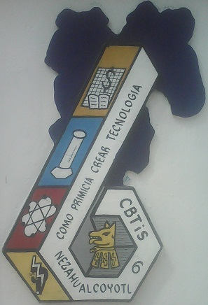

Historia del Plantel |
|
 El Centro de Bachillerato Tecnológico industrial y de servicios No. 6 (CBTis No.6 ) se creó por expansión natural de la DGETI en 1971, gracias al entonces Secretario de Educación Pública, el Ing. Víctor Bravo Ahuja y siendo en ese momento Subsecretario de Educación e Investigación Tecnológicas el Dr. Héctor Mayagoitia Domínguez y Director General de ETI, el Ing. César Uscanga Uscanga; con el objeto de que se atendiera a los alumnos egresados de la secundaria. Apoyando el proyecto se encontraba como Gobernador Constitucional del Estado de México el Prof. Carlos Hank González, siendo el H. Ayuntamiento Constitucional de Cd. Nezahualcóyotl, el donador del terreno para la construcción del plantel. Este centro educativo inició sus actividades en 1971, denominándose CECyT No. 148, inicialmente ocupó las instalaciones de la Escuela Secundaria Técnica No. 132 con domicilio en Avenida Toltecas, Colonia Maravillas, ofreciendo las especialidades de Contabilidad, Laboratorista Clínico y Electrónica, cuya población escolar era de 148 alumnos repartidos en 3 grupos, por otra parte se contó con una planta docente de 20 personas; 11de apoyo y 2 directivos que en suma eran 33 personas, 20 con nivel académico de licenciatura, siendo Director fundador, el Dr. Pedro Leyva Contreras. En el mes de febrero de 1972, pasa a ocupar las instalaciones donde actualmente se encuentra operando, dichas instalaciones están ubicadas al final de la Av. Chimalhuacán s/n, frente al Parque Industrial de Cd. Nezahualcóyotl, Estado de México. Actualmente el plantel oferta cuatro Especialidades:
|